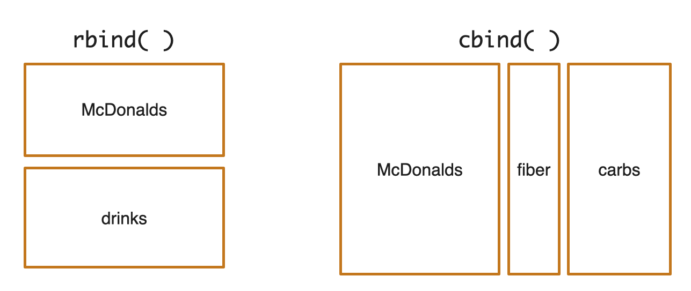
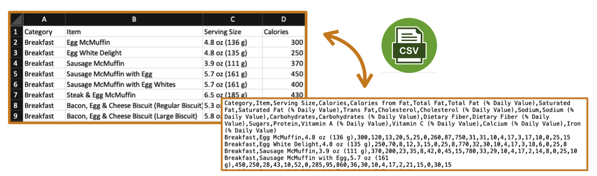
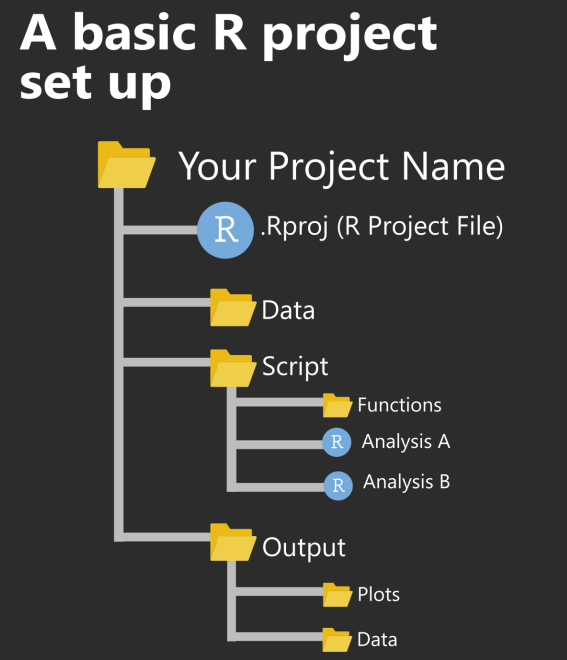

Learning objectives
This tutorial explains in more detail the syntax, functions, and code you’ll be using in the CB201 Quantitative Proteomics assignment. Specifically, this tutorial will cover:
- common R commands
- importing and processing data using tidyverse
- visualizing data using ggplot2 (focusing on generating scatterplots)
Please note, this tutorial is NOT meant to be a comprehensive guide to R. If you are interested in learning R, refer to the following resources:
- Harvard Catalyst online course: Introduction to R
- HSPH Bioinformatics Core workshops
- Center for
Computational Biomedicine
- Introduction to data analysis with R and Bioconductor (April 3rd - April 8th, 2023)
- Bulk RNA-seq with R/Bioconductor (April 10th - April 14th, 2023)
Some basic syntax
Output text
To output text in R, use single or double quotes. Click on the “Run Code” button below to run code within each code chunk. Compare the outputs from these 2 blocks. Do you see any difference?
"Quantitative proteomics is awesome"'Quantitative proteomics is awesome'Note: Both signle and double quotes can be used to output text in R.
Output number
To output number, just type the number (without quotes). Run code below.
42Add comments
Comments can be used to explain R code. Comments starts with one or
more #. R will ignore anything that starts with
#. # can also be used to prevent the execution
of alternative code when testing.
Run code chunks below and compare the outputs.
"Quantitative proteomics is awesome"
2+2
3+3# "Quantitative proteomics is awesome"
# 2+2
3+3 # Comment at the end of a line of codeNote: Because of #, R only calculates
3+3 in this code block.
Some common R commands (Part 1)
Perform calculations
At a basic level, we can use R much as we would use a calculator. Here is a list of arithmetic operator available in R.
| Operator | Description |
|---|---|
| + | Addition |
| - | Subtraction |
| * | Multiplication |
| / | Division |
| ^ | Exponent |
| %% | Remainder from division |
| %/% | Integer division |
# Add 42 and 23
42 + 23Your turn: try some of additional arithmetic operators. Hint: You can type directly into the code chunk below.
Compare values
Relational operators are used to compare between values. Here is a list of relational operators in R:
| Operator | Description |
|---|---|
| < | Less than |
| > | Greater than |
| <= | Less than or equal to |
| >= | Greater than or equal to |
| == | Equal to |
| != | Not equal to |
# Is 42 equal to 23?
42 == 23Your turn: try some of the relational operators.
Perform logical operations
Logical operators are used to carry out Boolean operations like AND, OR etc.
| Operator | Description |
|---|---|
| ! | NOT |
| & | AND (TRUE when both sides are TRUE) |
| | | OR (TRUE when either side is TRUE) |
# AND operator
(42 > 23) & (6 == 5) Note: (42 > 23) is TRUE; (6 == 5) is FALSE. For
AND operator to be TRUE, arguments on both sides need to be TRUE. Thus,
the output for (42 > 23) & (6 == 5) is FALSE.
Your turn: What’s your prediction for the following code chunk? Is it going to be same as the previous?
# AND operator
(42 > 23) | (6 == 5) Note: Again, (42 > 23) is TRUE; (6 == 5) is
FALSE. OR operator is true as long as one argument on either side is
TRUE. Thus, the output for (42 > 23) | (6 == 5) is
TRUE
Your turn: try some of the logical operators.
A quick note on functions
A function is a set of code organized to perform certain tasks. It takes input arguments and produces outputs by executing built-in R commands inside the function. R has a large number of built-in functions and the user can create their own functions. For more info, watch this 4 min video on functions.
The following code chunks showcase a few basic functions:
log10(100) ## log base 10 exp(3) ## e raised to a certain powerabs(-10) ## absolute valuesqrt(1764) ## square rootIf you’d like more info on any function, use help() or
?. Try running the following code chunks to find more info
on the functions log10() and abs().
help(log10)?absSome common R commands (Part 2)
Create variables
Variables are containers for storing data values. To assign a value
to a variable use <- or =
Note: A variable name must start with a letter and can be a combination of letters, digits, period(.) and underscore(_). Variable names are case-sensitive.
# Create some variables
name <- "John"
name <- "Doe" ## Variable can be easily overwritten
age <- 40Hint: Clicking on the “Run Code” button will run this code chunk and define the variables in the background. Run the next code chunk to print out the variables.
# Print variables
name
ageHint: name has been overwritten from
“John” to “Doe” in the previous code chunk.
Data types
Variable can store data of different types. Common data types include:
- Numeric: 42, 2.3, 7891752, -120
- Character (aka string): “x”, “CB201 is so cool”, “FALSE”, “11.5”
- Logical (aka Boolean): TRUE or FALSE
Note, there are other data types. We will not discuss those in this tutorial because they are beyond the scope of EA2.
# Check the data type of a variable using the function class()
class(name)
class(age)Data structure - vector
You will be working with 2 common data structures in EA2: vector and data frame. There are other data structures. We will not discuss those in this tutorial because they are beyond the scope of EA2.
Vector is the most basic data structure in R. They
are often defined using c(). c stands for
concatenate, aka put these together as a vector. Vector must contain
elements of the same data type.
# A character vector
item <- c("Egg McMuffin", "Sausage McMuffin", "Baked Apple Pie", "Chocolate Chip Cookie")
# Numeric vectors
calories <- c(300, 370, 250, 160)
fat <- c(13, 23, 13, 8)
protein <- c(17, 14, 2, 2)
# A logical vector
meat <- c(TRUE, TRUE, FALSE, FALSE)Your turn: try printing each of the vectors defined above. Note, you have to run the previous code chunk prior to printing them below.
Note, the following functions are useful for creating a sequence of
numbers. Remember, if you’d like more info about any function, use
help() or ?.
# Use the : operator
0:20
20:0# Use the seq( ) function
seq(from = 0, to = 20)
seq(from = 0, to = 20, by = 2)# Use the rep( ) function
rep(1, times = 5)
rep(c(0, 1, 2), times = 5)
rep(c(0, 1, 2), each = 5)Some useful functions
R has a number of built-in functions for data analysis. Let’s use the vectors we have set up to explore what these functions do.
| Function | Description |
|---|---|
| length() | number of values |
| max() | max |
| min() | min |
| sum() | sum |
| median() | median |
| mean() | mean |
| var() | variance |
| sd() | standard deviation |
# Recall previously defined vector
calories
# Find the mean of all values in Calories
mean(calories)Your turn: try out some of the functions on our pre-defined vectors
Data structure - data frame
A data frame is used for storing data tables; it’s a list of vectors of equal length. Data frame can include columns of any data types.
# Remember we previously defined several vectors
item <- c("Egg McMuffin", "Sausage McMuffin", "Baked Apple Pie", "Chocolate Chip Cookie")
calories <- c(300, 370, 250, 160)
fat <- c(13, 23, 13, 8)
protein <- c(17, 14, 2, 2)
meat <- c(TRUE, TRUE, FALSE, FALSE)
# Create a data frame with previously defined vectors
McDonalds <- data.frame(Item = item,
Calories = calories,
Fat = fat,
Protein = protein,
Meat = meat)
# Print data frame.
# Notice: the column names are Item, Calorie, Fat, Protein, and Meat.
# These columns store values from our previously defined vector
McDonaldsWe can access single columns in a data frame using the
$. This returns the column as a vector.
# Pull out the Item column from the McDonalds data frame
McDonalds$ItemWe can also access one or multiple rows or columns using
df[x,y] notation, where x specifies the row(s) you want and
y specifies the column(s). For example:
# Pull out the column named "Fat"
McDonalds[ , "Fat"] # Pull out the row 1, 3, and 4
McDonalds[c(1, 3, 4) , ] # The df[x, y] notation can also be used to exclude rows and/or columns.
# For example, to exclude row 3
McDonalds[-3 , ] In EA2, you will be asked to join data frames.
rbind( )can be used to add/join rowscbind( )can be used to add/join columns
In the following set of code chunks, we will use
rbind( ) to add a few more entries to the McDonalds data
frame. We will then use cbind() to add a few more columns
with nutrition info to the McDonalds data frame. See diagram below:

# Define a drinks vector
drinks <- data.frame(Item = c("Iced Tea", "Hot Chocolate", "Regular Iced Coffee") ,
Calories = c(0, 440, 190),
Fat = c(0, 16, 7),
Protein = c(0, 14, 1),
Meat = rep(FALSE, times = 3))
# Use rbind() to add the drinks data frame as new rows to the McDonalds data frame
McDonalds <- rbind(McDonalds, drinks)
McDonalds# Define a Fiber vector
fiber <- c(4, 4, 4, 1, 0, 1, 0)
# Use cbind() to add the fiber vector as a new column to the McDonalds data frame
McDonalds <- cbind(McDonalds, Fiber = fiber)
McDonalds# Define a carbs data frame
carbs <- data.frame(Carbohydrates = c(31, 29, 32, 21, 0, 61, 31),
Sugars = c(3, 2, 13, 15, 0, 56, 30))
# Use cbind() to add the carbs data frame as new columns to the McDonalds data frame
McDonalds <- cbind(McDonalds, carbs)
McDonaldsSome useful functions for working with data frames
R has a number of useful functions for working with data frames
# Find number of rows in data frame
nrow(McDonalds)
# Find number of columns in data frame
ncol(McDonalds)
# Find dimensions of data frame
dim(McDonalds)Import and process data
Packages in R and Tidyverse
Packages are the units of reproducible R code. They include R functions, the documentation that describes how to use those functions, and sample data. By default, R installs a set of packages during installation. Others need to be installed and loaded prior to use. These packages are available for download from CRAN and other repositories such as Bioconductor.
- To install packages use code such as
install.packages("readxl"). - To load packages use code such as
library(readxl). - To check out what packages are installed already use
installed.packages(). - To check if any packages need updating use
old.packages().
In EA2, we’ll be using Tidyverse. Tidyverse is a
collection packages useful for data science. In particular, we will use
the packages dplyr and ggplot2 from
tidyversefor data processing and data visualization,
respectively.
Importing data
Comma-separated file (.csv file) is one of the most commonly used file formats for data storage in the biological/biomedical sciences. csv files store tabular data (number and text) in plain text. It use comma to separate values (see figure below).

There are multiple ways to read import data for analysis:
- The built-in
read.csv()function read in a .csv file as a data frame read_csv()function from thetidyversesuite of packages offers more functionalityread_excel()function from thereadxlpackage reads in Excel files
The following code chunk uses read.csv() followed by a
relative file path to read in the full McDonalds Menu from a csv file.
This data set was adapted from Kaggle dataset: Nutrition
Facts for McDonald’s Menu. It contains the nutritional value of
items on McDonald’s menu.
McDonalds_FullData <- read.csv("data/McDonalds_menu.csv")Inspecting data
In the following code chunks, we will be working with the data frame
McDonalds_FullData. Note, to work with this data
frame, make sure you have imported it in the previous section.
Let’s start with inspecting this data frame…
Previously, we looked at nrow(), ncol(),
dim(). Try using these functions to figure out the number
of rows, the number of columns, and the dimension of
McDonalds_FullData.
Hint: number of rows = 260, number of columns = 24, dimension = 260 x 24
Other useful functions for inspecting data:
| Function | Description |
|---|---|
| head() | return first parts of data frame |
| tail() | return last parts of data frame |
| str() | compactly look at the structure of data frame |
| glimpse() | from dplyr package, get a glimpse of data frame |
| summary() | get quick statistics of columns |
Now, it’s your turn to try out a few of these functions. Please feel free to edit the code chunk below.
glimpse(___)Processing data
Pipes, %>%, allows the output of a previous command
to be used as the input of another command, rather than using nested
functions. This can make code more human readable. Compare the outputs
from the following 2 code chunks:
round(sqrt(95), digit = 1) ## use nested functionssqrt(95) %>% round(digit = 1) ## use %>%%>% is often used to string together multiple
functions from the dplyr() package used for data wrangling.
These functions include:
| Function | Description |
|---|---|
| filter() | pick rows based on certain condition(s) |
| select() | extracts (and optional renames) variables |
| rename() | changes the name of variables |
| mutate() | add new variables that are derived from existing variables |
| arrange() | orders rows by values of selected variable |
| group_by() | groups data frame by values of variable(s) for subsequent operation(s) |
| summarise() | reduces multiple values down to a single summary (e.g., mean) |
Your turn: try figure out what the following lines of code is trying to achieve:
McDonalds_FullData %>%
select(Category, Item, Calories, Calories.from.Fat) %>%
filter(Calories != 0) %>%
rename(FatCalories = Calories.from.Fat) %>%
mutate(PercentFatCalories = FatCalories / Calories * 100) %>%
group_by(Category) %>%
summarise(MeanPercent = mean(PercentFatCalories)) %>%
arrange(desc(MeanPercent))Hint: Calculate the average % of total calorie from fat for different categories and arrange the output in descending order (items with 0 calories were excluded from analysis).
Visualize data using ggplot2
ggplot2 is a dedicated package for data visualization.
Every graph in ggplot2 is built using at least three components:
- data: data set for graphing
- aesthetics: variables mapped to x or y positions and aesthetics attributes such as color, shape, or size
- geometries: way of displaying data (e.g., bars, points, lines)
ggplot(data = <DATA>, mapping = aes(<MAPPINGS>)) +
<GEOM_FUNCTION>()Using the + operator, we can build upon a basic
ggplot2 graph and define/modify different elements
including:
- scale: map data values to visual values of an aesthetic
- theme: adjust graphic background, axis, grid, etc
- labeling: add/modify graphic title, subtitle, caption, legend, etc
- statistics: transform data for graphing (e.g., graph mean, median, etc)
- facets: display subsets of data
- coordinates: transform axis
For more adjustments you can make with ggplot2, see ggplot2 documentation or cheatsheet
Build a basic scatter plot
Now, let’s build a scatter plot to show the relationship between
Calories and Protein of items in McDonalds_FullData. Note,
for all exercises on this page, McDonalds_FullData has been
pre-loaded for you.
ggplot(data = McDonalds_FullData, # data
mapping = aes(x = Calories, y = Protein)) + # mappings to aesthetics
geom_point() # geom functionAdd color and specify shape and size of dots
Assume we want to color dots by category (e.g., Breakfast, Salads, etc), use empty circles for graphing (preferred when dots overlap), and specify shape and size of of the dots. We can achieve all of these by adjusting the code used to to build the basic dot plot above. Compare the code chunk below to the one above. What do you think each of the newly added argument is doing?
ggplot(data = McDonalds_FullData,
mapping = aes(x = Calories, y = Protein, color = Category)) +
geom_point(shape = 21, size = 1.5)Hint: Look up the documentation for
geom_point() for all the changes you can make to the dot
plot.
Adjust axis range and location of tick marks
We can use the + operator to add layers and
define/modify different elements of a graph. Assume we want to adjust
x-axis so it starts at 0, ends at 2000, with tick marks every 500. We
can achieve this by adding one line of code:
ggplot(data = McDonalds_FullData,
mapping = aes(x = Calories, y = Protein, color = Category)) +
geom_point(shape = 21, size = 1.5) +
scale_x_continuous(limits = c(0, 2000),
breaks = seq(from = 0, to = 2000, by = 500))Your turn: Assume we want to adjust x-axis so it starts at 0, ends at 100, with tick marks every 25. Complete the code chunk below to achieve this.
ggplot(data = McDonalds_FullData,
mapping = aes(x = Calories, y = Protein, color = Category)) +
geom_point(shape = 21, size = 1.5) +
scale_x_continuous(limits = c(0, 2000),
breaks = seq(from = 0, to = 2000, by = 500)) +
___ggplot(data = McDonalds_FullData,
mapping = aes(x = Calories, y = Protein, color = Category)) +
geom_point(shape = 21, size = 1.5) +
scale_x_continuous(limits = c(0, 2000),
breaks = seq(from = 0, to = 2000, by = 500)) +
scale_y_continuous(limits = c(0, 100),
breaks = seq(from = 0, to = 100, by = 25))Use built-in themes
We can use themes built-in to ggplot to change the display of a
graph. See a list of ggplot2 themes here.
Your turn: Add theme_bw() to the graph we have been
building. What differences do to do you see between the graph with
theme_bw() to those without?
ggplot(data = McDonalds_FullData,
mapping = aes(x = Calories, y = Protein, color = Category)) +
geom_point(shape = 21, size = 1.5) +
scale_x_continuous(limits = c(0, 2000),
breaks = seq(from = 0, to = 2000, by = 500)) +
scale_y_continuous(limits = c(0, 100),
breaks = seq(from = 0, to = 100, by = 25)) +
___ggplot(data = McDonalds_FullData,
mapping = aes(x = Calories, y = Protein, color = Category)) +
geom_point(shape = 21, size = 1.5) +
scale_x_continuous(limits = c(0, 2000),
breaks = seq(from = 0, to = 2000, by = 500)) +
scale_y_continuous(limits = c(0, 100),
breaks = seq(from = 0, to = 100, by = 25)) +
theme_bw()Add/Adjust labels
To add/adjust labels, we can add a labs() layer.
Your turn: We want make the graph more informative by changing the
x-axis label to “Calories (Cal)”, y-axis label to “Protein (g)”, and
title to “Protein and Calorie of Items on McDonald’s Menu”. Look at the
documentation for labs and figure out how you would achieve
this.
ggplot(data = McDonalds_FullData,
mapping = aes(x = Calories, y = Protein, color = Category)) +
geom_point(shape = 21, size = 1.5) +
scale_x_continuous(limits = c(0, 2000),
breaks = seq(from = 0, to = 2000, by = 500)) +
scale_y_continuous(limits = c(0, 100),
breaks = seq(from = 0, to = 100, by = 25)) +
theme_bw() +
___ggplot(data = McDonalds_FullData,
mapping = aes(x = Calories, y = Protein, color = Category)) +
geom_point(shape = 21, size = 1.5) +
scale_x_continuous(limits = c(0, 2000),
breaks = seq(from = 0, to = 2000, by = 500)) +
scale_y_continuous(limits = c(0, 100),
breaks = seq(from = 0, to = 100, by = 25)) +
theme_bw() +
labs(x = "Calories (Cal)", y = "Protein (g)",
title = "Protein and Calorie of Items on McDonald's Menu")Highlight data points in a scatter plot
Looking at the scatter plot above, we see that there is one outlier. In this section, we will highlight that outlier and add a label. We will:
- create a data frame with just the outlier
- use
McDonalds_FullDataandoutlierto generate the graph, and color the outlier red - use
geom_text_repel()from theggrepelpackage to label the outlier with its item name
Compare the code chunk below with the code chunk above – what new lines of code do you see? What do you think their functions are?
# Filter for outlier
outlier <- McDonalds_FullData %>%
filter(Protein > 75)
# Adjust colors to highlight the outlier and add a label
ggplot(data = McDonalds_FullData,
mapping = aes(x = Calories, y = Protein)) +
geom_point(shape = 21, size = 1.5, color = "grey51") +
geom_point(data = outlier,
shape = 21, size = 1.5, color = "indianred4", fill = "indianred1") +
geom_text_repel(data = outlier, mapping = aes(label = Item),
size = 3, segment.size = 0.2, nudge_x = -20, nudge_y = 5) +
scale_x_continuous(limits = c(0, 2000),
breaks = seq(from = 0, to = 2000, by = 500)) +
scale_y_continuous(limits = c(0, 100),
breaks = seq(from = 0, to = 100, by = 25)) +
theme_bw() +
theme(panel.grid.minor = element_blank()) +
labs(x = "Calories (Cal)", y = "Protein (g)",
title = "Protein and Calorie of Items on McDonald's Menu")geom_point(data = outlier, shape = 21, size = 1.5, color = "indianred4", fill = "indianred1")
color codes the outlier red.
geom_text_repel(data = outlier, mapping = aes(label = Item), size = 3, segment.size = 0.2, nudge_x = -20, nudge_y = 5)
labels the outlier with its item name.
Your turn: try highlighting all menu items that contain chicken.
# Hint: str_detect() can be used to find certain text patterns
chicken <- McDonalds_FullData %>%
filter(str_detect(string = Item, pattern = "Chicken"))
# Your turn: highlight chicken containing itemsggplot(data = McDonalds_FullData,
mapping = aes(x = Calories, y = Protein)) +
geom_point(shape = 21, size = 1.5, color = "grey51") +
geom_point(data = chicken,
shape = 21, size = 1.5, color = "indianred4", fill = "indianred1") +
geom_text_repel(data = McDonalds_FullData %>% filter(Protein > 75),
mapping = aes(label = Item),
size = 3, segment.size = 0.2, nudge_x = -20, nudge_y = 5) +
scale_x_continuous(limits = c(0, 2000),
breaks = seq(from = 0, to = 2000, by = 500)) +
scale_y_continuous(limits = c(0, 100),
breaks = seq(from = 0, to = 100, by = 25)) +
theme_bw() +
theme(panel.grid.minor = element_blank()) +
labs(x = "Calories (Cal)", y = "Protein (g)",
title = "Protein and Calorie of Items on McDonald's Menu")Exporting your plot
Use ggsave() function to export your plot. It defaults
to saving the last plot that you displayed. It also allows you to
specify different parameters of the plot. For example:
ggsave(filename = "McDonalds_ProteinVsCalorie.jpg",
bg = "white", width = 6, height = 4, units = "in", dpi = 300)Quick notes about interactive visualization
In EA2, you will also create interactive visualization. Specifically, you will use the following packages:
plotlyis a open-source library for developing interactive visualizations. It provides a number of “standard” interactions (pop-up labels, drag to pan, select to zoom, etc) automatically. Moreover, it is possible to take aggplot2plot and wrap it in Plotly in order to make it interactive.htmlwidgetsprovides a way to utilize a number of JavaScript interactive visualization libraries. JavaScript is the programming language used to create interactive websites (HTML files), and so is highly specialized for creating interactive experiences.
Detailed description of these packages is beyond the scope of this tutorial.
A few notes about reproducibility
A data analysis is reproducible if all the information (data, files, etc.) required is available for someone else to re-do the entire analysis. This often means the following should be available
- The data
- All steps for cleaning the raw data (including the code used) in preparation for analysis
- All code and software (specific versions, packages) used for analysis
This sections list a few recommendations for making your data analysis more reproducible. This list is by no means exhaustive. For more on this topic, refer to Reproducible Research with R & RStudio by Christopher Gandrud.
Create self-contained projects
Organize each data analysis project in a folder on your computer that holds all the relevant files for that project (input data, R script, analytically results, figures, etc). Also, consider how you structure this folder. Is it structured in a way that helps your collaborators - including a future version of yourself – to navigate the analysis easily? A basic R project set up could be as follows (Image derived from Martin Chan’s Blog by Martin Chan)

You may have noticed that the first file within “Your Project Name” folder is an RStudio Project file (.Rproj). Creating and using .Rproj ensures that your working directory points to the root folder where that .Rproj file is saved and avoids issues that might arise with using an full absolute path. Read this blog for more info on file path referencing with RStudio Projects.
Use RMarkdown/Quarto
EA2 uses RMarkdown. R Markdown weaves together narrative text and code, improving the readability/reproducibility of your code. At the click of a button, or the type of a command, you can rerun the code in an R Markdown file to reproduce your work and export the results as a finished report. In the last step of EA2, you will “Knit” your document to create a html report for submission.
Note, Posit (formally RStudio) recently launched Quarto. Quarto is marketed as a next generation version of R Markdown, with many new features and capabilities. Of note, one major feature of Quarto is that it’s language-agnostic. It can render documents that contain code written in R, Python, Julia, or Observablem, making it very useful if you work with people who write in a different programming language.
Include a timestamp and session info
Code is provided in the last step of EA2 to add a timestamp and
session info. These are important information to document for any
analysis. In particular, sessionInfo() summarizes your R
environment and makes it easy to check the version of packages you used
for the analysis.